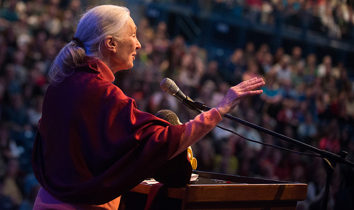

A lo largo de mi vida he ganado diferentes premios y menciones como investigadora y activista.
Soy la única no tanzana galardonada con la Medalla de Tanzania, soy miembro de la Orden del Imperio Británico
y
he sido condecorada con múltiples premios y distinciones, entre ellos la Medalla Hubbard de la National
Geographic Society (1995) y los premios Kioto(1990), Caring (1996) y Gandhi/King de la No Violencia (2001).
Desde 2002 soy Mensajera de la Paz de la ONU.
En 2003 recibí la Medalla Benjamín Franklin (Estados Unidos) y el Premio Príncipe de Asturias de Investigación
Científica y Técnica, Asimismo, poseo posesión de más de 35 doctorados Honoris causa por universidades e
instituciones de todo el mundo.

1980: Order of the Golden Ark, World Wildlife Award for Conservation
1984: J. Paul Getty Wildlife Conservation Prize
1985: Living Legacy Award from the International Women's League
1985: Society of the United States; Award for Humane Excellence, American Society for the Prevention of
Cruelty to Animals
1987: Ian Biggs' Prize
1987: Golden Plate Award, American Academy of Achievement
1989: Encyclopædia Britannica Award for Excellence on the Dissemination of Learning for the Benefit of
Mankind; Anthropologist of the Year Award
1990: The AMES Award, American Anthropological Association; Whooping Crane Conservation Award, Conoco, Inc.;
Gold Medal of the Society of Woman Geographers; Inamori Foundation Award; Washoe Award; The Kyoto Prize in
Basic Science
1991: The Edinburgh Medal
1993: Rainforest Alliance Champion Award
1994: Chester Zoo Diamond Jubilee Medal
1995: Commander of the Order of the British Empire, presented by Her Majesty Queen Elizabeth II; The
National
Geographic Society Hubbard Medal for Distinction in Exploration, Discovery, and Research; Lifetime
Achievement
Award, In Defense of Animals; The Moody Gardens Environmental Award; Honorary Wardenship of Uganda National
Parks
1996: The Zoological Society of London Silver Medal; The Tanzanian Kilimanjaro Medal; The Primate Society of
Great Britain Conservation Award; The Caring Institute Award; The Polar Bear Award; William Procter Prize
for
Scientific Achievement
1997: John & Alice Tyler Prize for Environmental Achievement; David S. Ingells, Jr. Award for Excellence;
Common Wealth Award for Public Service; The Field Museum's Award of Merit; Tyler Prize for Environmental
Achievement; Royal Geographical Society / Discovery Channel Europe Award for A Lifetime of Discovery
1998: Disney's Animal Kingdom Eco Hero Award; National Science Board Public Service Award; The Orion
Society's
John Hay Award
1999: International Peace Award; Botanical Research Institute of Texas International Award of Excellence in
Conservation, Community of Christ International Peace Award
Tournament of Roses Parade Grand Marshal Jane Goodall, 11th female Grand Marshal, at Tournament House,
2012
2001: Graham J. Norton Award for Achievement in Increasing Community Livability; Rungius Award of the
National
Museum of Wildlife Art, USA; Roger Tory Peterson Memorial Medal, Harvard Museum of Natural History; Master
Peace Award; Gandhi/King Award for Non-Violence
2002: The Huxley Memorial Medal, Royal Anthropological Institute of Great Britain and Ireland; United
Nations
"Messenger of Peace" Appointment
2003: Benjamin Franklin Medal in Life Science; Harvard Medical School's Center for Health and the Global
Environment Award; Prince of Asturias Award for Technical and Scientific Achievement; Dame Commander of the
Order of the British Empire, presented by His Royal Highness Prince Charles; Chicago Academy of Sciences'
Honorary Environmental Leader Award
2004: Nierenberg Prize for Science in the Public Interest; Will Rogers Spirit Award, the Rotary Club of Will
Rogers and Will Rogers Memorial Museums; Life Time Achievement Award, the International Fund for Animal
Welfare; Honorary Degree from Haverford College
2005: Honorary doctorate degree in science from Syracuse University
2005: Honorary doctorate degree in science from Rutgers University
2005: Discovery and Imagination Award
2006: 60th Anniversary Medal of the UNESCO
2006: French Légion d'honneur
2007: Honorary doctorate degree in commemoration of Carl Linnaeus from Uppsala University
2007: Honorary doctorate degree from University of Liverpool
2008: Honorary doctorate degree from University of Toronto
2009: Honorary doctorate degree from National University of Córdoba
2009: Honorary doctorate degree from Pablo de Olavide University
2010: Bambi Award in the Category "Our Earth"
2010: Golden Doves for Peace journalistic prize issued by the Italian Research Institute Archivio Disarmo
2011: Honorary doctorate degree from American University of Paris
2011: Grand Officer of the Order of Merit of the Italian Republic
2012: Named Grand Marshal of the 2013 Tournament of Roses Parade
2012: Honorary doctorate degree from National Tsing Hua University (NTHU, Taiwan)
2013: Key to the city by Gustavo Petro, former mayor of Bogota (Colombia)
2013: Awarded an honorary doctorate by Trinity College Dublin
2014: President's Medal by the British Academy
2015: The Perfect World Foundation Award The Conservationist of the years 2015 & The Prize "The Fragile
Rhino"
2017: International Cosmos Prize
2019: Gold Medal of the Royal Canadian Geographical Society
2019: Honorary doctorate degree in science from McGill University